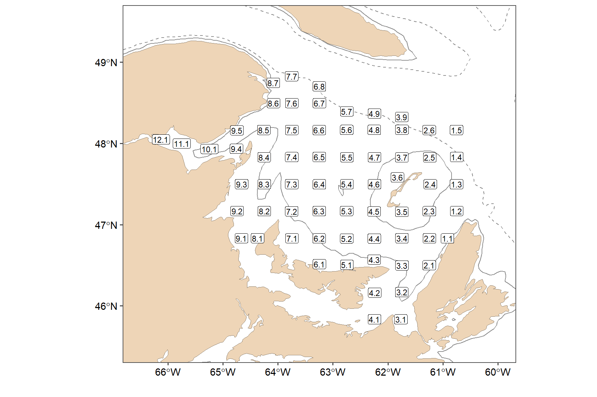
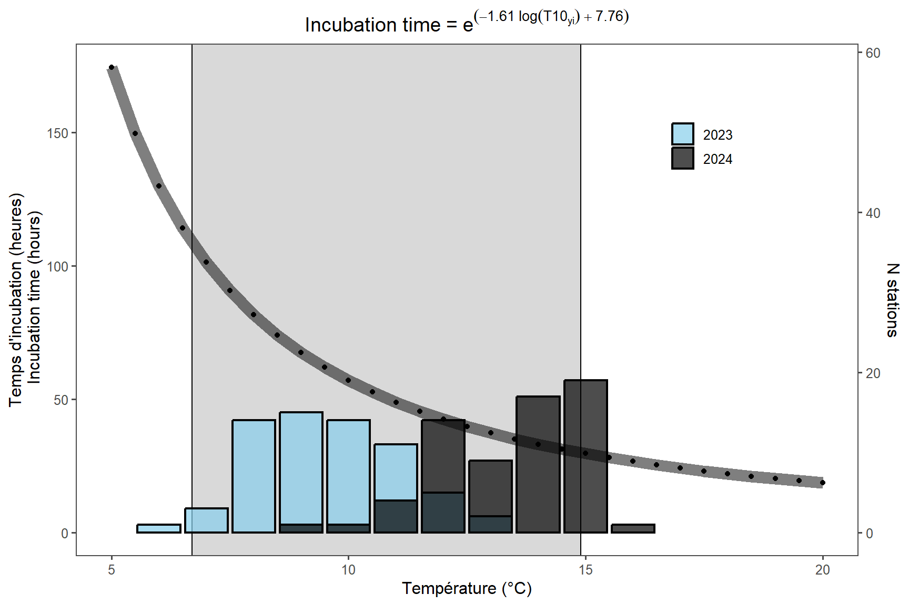
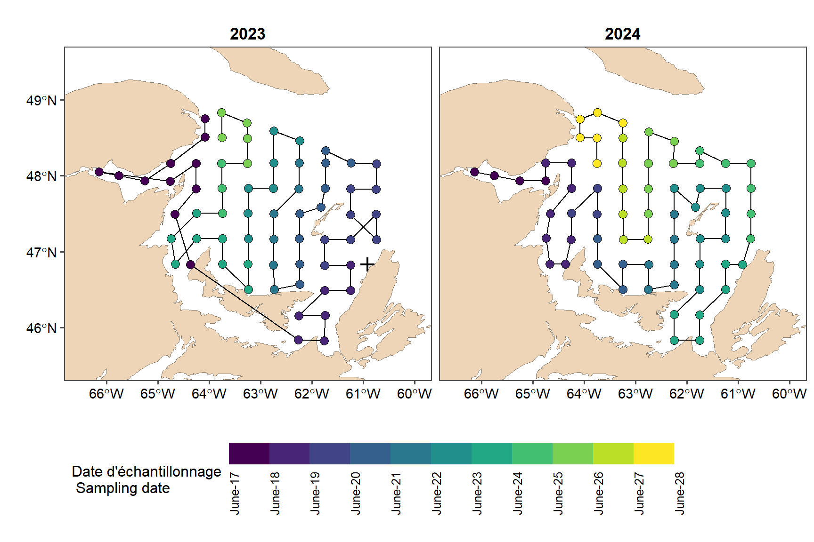
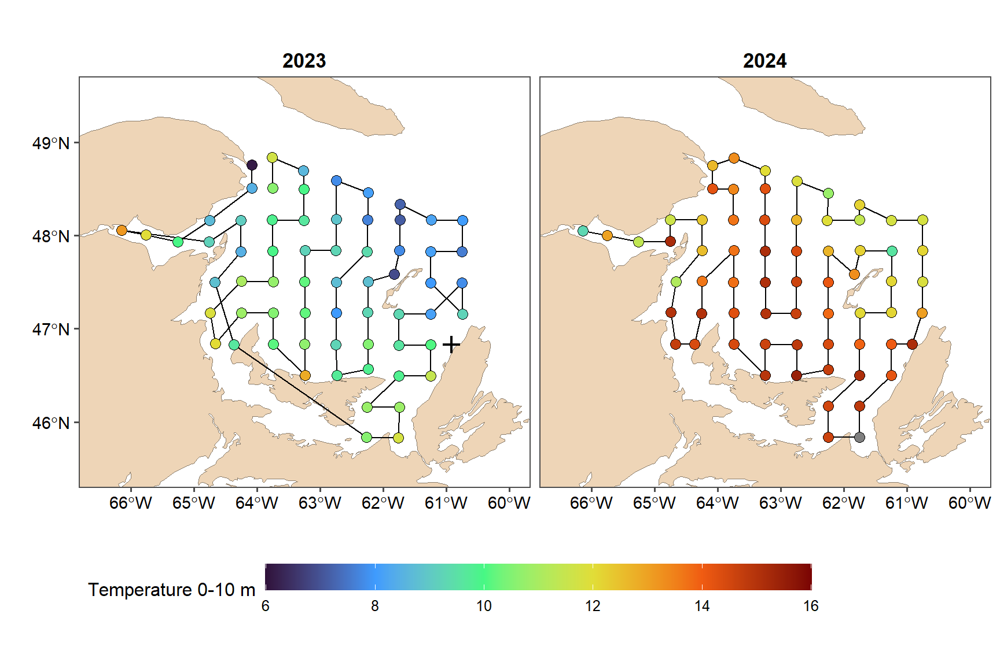
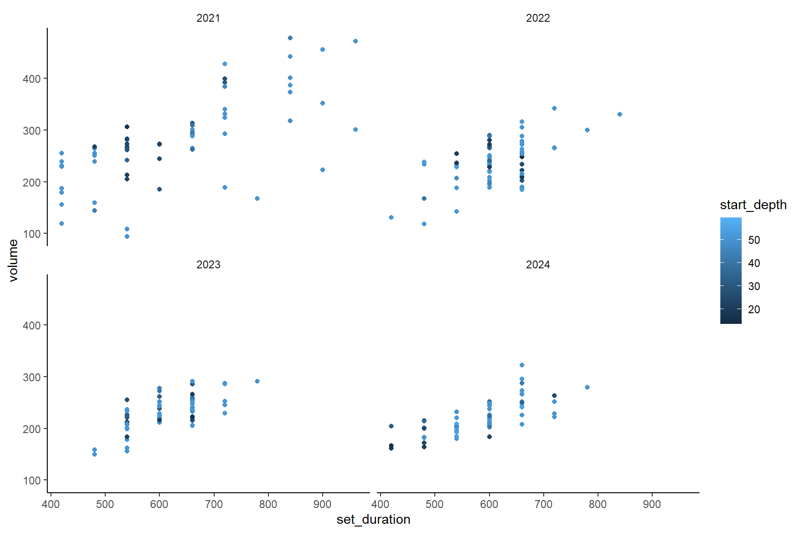
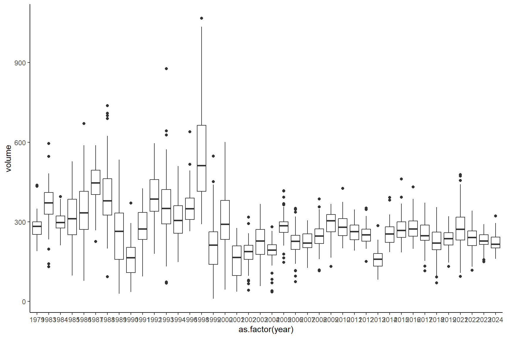
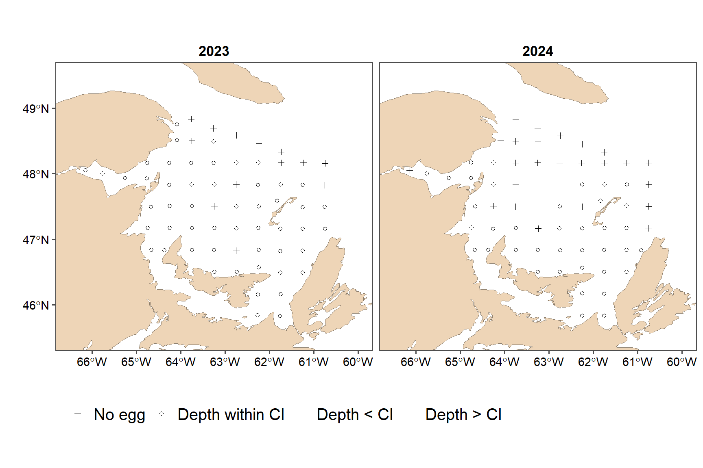
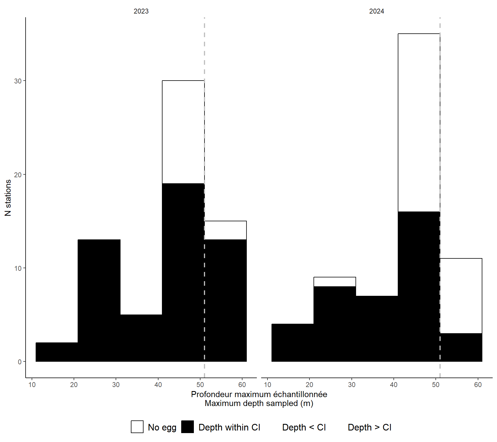

##### my packages ################################################################################
## CRAN
cran.packages <- c('tidyverse','boot','magrittr','ggpmisc','ggpubr','ggthemes','mgcv',
'fields', 'inlabru', 'sf', 'PresenceAbsence', 'verification', 'raster',
'scales', 'nlme','nls.multstart', 'stringr', 'ggforce',"readxl", "marmap")
install.this <- cran.packages[!(cran.packages %in% utils::installed.packages()[,"Package"])]
if(length(install.this)>=1) install.packages(install.this)
dummy <- lapply(cran.packages, require, character.only = TRUE)
## github
git.packages <- c('catchR','DFOdata','CCAM', 'INLA')
install.this <- git.packages[!(git.packages %in% utils::installed.packages()[,"Package"])]
if('catchR' %in% install.this) devtools::install_github("iml-assess/catchR@eli_parallel")
if('DFOdata' %in% install.this) devtools::install_github("iml-assess/DFOdata")
if('CCAM' %in% install.this) devtools::install_github("elisvb/CCAM")
if('INLA' %in% install.this)install.packages("INLA",repos=c(getOption("repos"),INLA="https://inla.r-inla-download.org/R/stable"), dep=TRUE)
dummy <- lapply(git.packages, require, character.only = TRUE)
##### source R directory ############################################################################
#invisible(sapply(list.files(pattern="[.]R$", path="R/", full.names=TRUE), source))
##### my ggplot theme ################################################################################
theme_set(theme_mackerel()) # theme_mackerel from catchR
update_geom_defaults("line", list(size = 1)) # no idea why somethimes I get fat lines otherwise
##### passwords databases #############################################################################
source("../../bdOracle.R")
source(paste0("utils/basemap.R")) #if error "plot new has not been call", restart R, package compatibility issues
source(paste0("utils/mackerel_fun_incubation.R")) # Mackerel incubation .
source(paste0("utils/spatial_projections.R"))#
source(paste0("utils/extract_biochem.R"))
source(paste0("utils/extract_T0_10.R"))
source(paste0("INLA/Mesh.R"))
source(paste0("INLA/INLA_ZAG_covar_Stations.R"))
source(paste0("INLA/INLA_ZAG_covar_Stations_CV.R"))
source(paste0("utils/nlme_boot.R"))
source(paste0("INLA/INLA_tw_covar_Stations.R"))
source(paste0("INLA/INLA_tw_covar_Stations_CV.R"))
source(paste0('INLA/plotSpatialFieldCL.R'))
source(paste0('INLA/plotSmoother.R'))
source(paste0('INLA/model_validation.R'))
source(paste0('INLA/get_prediction_grid.R'))
source(paste0('../biochem/PL_Get_SampleID_Batch.R'))
source(paste0('../biochem/PL_Get_Counts_Batch.R'))
source(paste0('../biochem/PL_Read_Filter.R'))
source(paste0('../biochem/PL_Taxonomic_Grouping.R'))
log10p1_trans = function() scales::trans_new("log10p1", transform=function(x) log10(x+1), inverse=function(x) (10^x)-1)#inverse function is necessary for legend
#source(paste0("R/",year_to_report,"/INLA/getvar.R")) # needs to be retoughtif(new){
setwd(rprojroot::find_rstudio_root_file())
extract_biochem(year=my.year, path_to_file = NULL) # if warning about maqytr then probably wrong locale Rstart R
extract_T0_10(year=my.year)
}lookup <- read.delim(paste0(root,"data/lookup_station_egg.txt")) # position and depth of stations.
bat <- getNOAA.bathy(-70,-58,40,52, res = 4, keep = F)
bat_xyz <- as.xyz(bat) # %>% filter(V3 < -90 & V3 > -110)
basemap2 +
geom_contour(
data = bat_xyz,
aes(x = V1, y = V2, z = V3),
breaks = -200, color = "grey55", linewidth = 0.5, linetype=2
)+
geom_contour(
data = bat_xyz,
aes(x = V1, y = V2, z = V3),
breaks = -50, color = "grey55", linewidth = 0.5, linetype=1
) +
geom_sf(data = fortify(nec), fill = "bisque2", col = "bisque4") +
geom_label(data = lookup, aes(x = longitude, y = latitude, label = station), size = 3, label.padding = unit(0.1, "lines")) + coord_sf(xlim=c(-66.5,-60),ylim=c(45.5,49.5))
ggsave(paste0(root,"img/",my.year,"/area_of_interest.png"), width = 6, height = 6, units = "in", dpi = 600)
egg <- readRDS(paste0(root,"data/",my.year,"/PL_Bongo_Scomber_eggs_larvae_Counts_L2_", my.year, ".RDS"))# %>%
egg <- egg %>% dplyr::filter(!grepl(station, pattern="4R"),
!grepl(station, pattern="3P"),
!grepl(station, pattern="SP")) %>% dplyr::arrange(year,station)
#incubation time.
egg %<>%
dplyr::mutate(
I = I_lockwood(temperature0_10),
IM = I_mendiola(temperature0_10),
DEP = maq_eggs_stage1_5 / I * 24,
DEPM = maq_eggs_stage1_5 / IM * 24
) # Calculate daily egg production (DEP) by station
# filtering
egg %<>% dplyr::filter(!is.na(DEP), DEP < 1500) # there was one really large value, volume is suspiciously high considering the depth, that could not be predicted with ZAG, removed.
sample_id_to_remove <- egg %>% dplyr::filter((set_duration < 500 & volume >550) |(volume >800 & set_duration < 1000))
egg <- egg %>% dplyr::filter(!sample_id %in% sample_id_to_remove$sample_id)
egg <- left_join(egg, egg %>% dplyr::group_by(station) %>% summarize(etopo = mean(sounding, na.rm = T))) %>% dplyr::mutate(depth = coalesce(sounding, etopo), DEPbackup = DEP)
eggt1 <- egg %>% dplyr::filter(!year %in% c(1982), trajet==1)
tableN <-eggt1 %>%
dplyr::group_by(year) %>%
tally() %>% dplyr::mutate(trajet=1)
kable(tableN %>% dplyr::arrange(desc(year)))| year | n | trajet |
|---|---|---|
| 2024 | 66 | 1 |
| 2023 | 65 | 1 |
| 2022 | 65 | 1 |
| 2021 | 61 | 1 |
| 2019 | 65 | 1 |
| 2018 | 65 | 1 |
| 2017 | 65 | 1 |
| 2016 | 65 | 1 |
| 2015 | 60 | 1 |
| 2014 | 64 | 1 |
| 2013 | 66 | 1 |
| 2012 | 66 | 1 |
| 2011 | 66 | 1 |
| 2010 | 65 | 1 |
| 2009 | 64 | 1 |
| 2008 | 53 | 1 |
| 2007 | 66 | 1 |
| 2006 | 63 | 1 |
| 2005 | 61 | 1 |
| 2004 | 64 | 1 |
| 2003 | 65 | 1 |
| 2002 | 63 | 1 |
| 2001 | 61 | 1 |
| 2000 | 62 | 1 |
| 1999 | 52 | 1 |
| 1998 | 64 | 1 |
| 1996 | 65 | 1 |
| 1994 | 65 | 1 |
| 1993 | 65 | 1 |
| 1992 | 65 | 1 |
| 1991 | 65 | 1 |
| 1990 | 65 | 1 |
| 1989 | 65 | 1 |
| 1988 | 64 | 1 |
| 1987 | 64 | 1 |
| 1986 | 58 | 1 |
| 1985 | 63 | 1 |
| 1984 | 65 | 1 |
| 1983 | 63 | 1 |
| 1979 | 59 | 1 |
write.table(tableN, paste0(root,"results/",my.year,"/tableN_trajets.txt"), sep = "\t", dec = ".", row.names = F)
all_years= data.frame(year=seq(1979, my.year, 1))
# Data for cross validation for INLA####
year_to_cv <- full_join(eggt1, expand_grid(station = unique(egg$station), unique(egg %>% dplyr::select(year)))) %>%
dplyr::group_by(year) %>%
dplyr::filter(is.na(DEP), year != my.year) %>%
tally() %>%
dplyr::filter(n <= 1)
# set to NA the value you want to fit
eggcv <- eggt1 %>%
dplyr::filter(year %in% year_to_cv$year) %>%
dplyr::group_by(year) %>%
sample_n(size = 10) %>%
dplyr::mutate(DEP = NA)
eggcv_to_fit <- eggt1 %>% dplyr::filter(!sample_id %in% eggcv$sample_id)
eggcv_all <- as.data.frame(bind_rows(eggcv, eggcv_to_fit))
if(!file.exists(paste0(root,"data/",my.year,"/INLA/INLA_CV_eggdata.RData"))){ #prevent overwriting
save(eggcv_to_fit, eggcv_all, file=paste0(root,"data/",my.year,"/INLA/INLA_CV_eggdata.RData"))
}
save(eggt1, file=paste0(root,"data/",my.year,"/eggt1.RData"))
egg_temp = eggt1 %>% filter(year %in% (my.year-1): my.year) %>% dplyr::select(year, temperature0_10) %>% mutate(temperature0_10 = round(temperature0_10)) %>% group_by(year, temperature0_10) %>% tally() %>% rename(Incubation=n)
scaling.factor <- 3
Temp <- c(seq(5,20,0.5))
Temp <- as.data.frame(Temp)
p1<- Temp %>% mutate(`Incubation` = I_lockwood(Temp)) %>%
ggplot(aes(Temp, Incubation)) +
geom_rect(aes(xmin=6.7, xmax=14.9, ymin=Inf, ymax=-Inf), col="black", fill="grey85")+
geom_bar(data=egg_temp,aes(x=temperature0_10, y=Incubation*scaling.factor, fill=as.factor(year)), stat="identity", position=position_identity(), alpha=0.7, col="black", lwd=0.8)+ xlab("Temp\u00E9rature (\u00B0C)") +
scale_y_continuous("Temps d'incubation (heures)\n Incubation time (hours)",
sec.axis = sec_axis(~ . / scaling.factor, name = "N stations"))+
geom_line(size = 4, alpha = 0.5)+geom_point() +
scale_fill_manual(values=c("skyblue", "black"))+
theme_few()+theme(legend.title=element_blank(),
legend.position = "inside",
legend.position.inside=c(0.8, 0.8),
legend.background = element_blank())
p1 +ggtitle(expression(Incubation~time~"="~e^(-1.61~log(T10[y][,][i])~+~7.76))) +theme(plot.title=element_text(hjust=0.5))
ggsave(paste0(root,"img/",my.year,"/Incubation_timeBI.png"), width=6, height=4, dpi=600, units="in") eggmap <- eggt1 %>% filter(year %in% (my.year-1) : my.year) %>% mutate(date=ymd(date))
look2<- expand_grid(lookup, year=(my.year-1) : my.year) %>% filter(!paste(station, year) %in% paste(eggmap$station, eggmap$year))
egg2<- plyr::join(eggmap, look2 , type="full") %>% st_as_sf(coords=c("longitude", "latitude"), crs=4326)
emap<- eggmap %>% st_as_sf(coords=c("longitude", "latitude"), crs=4326, remove=F) %>% mutate(consecutive=as.numeric(as.character(consecutive))) %>% ungroup() %>% dplyr::arrange(year,consecutive) %>% mutate(ID=1:nrow(eggmap)) %>% st_drop_geometry() #%>% st_coordinates() %>% st_linestring() %>% as.matrix()
lab_dates <- seq(min(egg2$doy, na.rm=T), max(egg2$doy, na.rm=T),1)
Sys.setlocale("LC_ALL", "English_Canada.utf8")
## [1] "LC_COLLATE=English_Canada.utf8;LC_CTYPE=English_Canada.utf8;LC_MONETARY=English_Canada.utf8;LC_NUMERIC=C;LC_TIME=English_Canada.utf8"
basemap2 + geom_path(data=emap, aes(x=longitude, y=latitude)) + geom_sf(data=egg2 %>% filter(!is.na(doy)), aes(fill= doy), size=3, shape=21) +
geom_sf(data=egg2 %>% filter(is.na(doy)), size=3, shape=3, col="black", stroke=1.1) +coord_sf(xlim=c(-66.5,-60), ylim=c(45.5,49.5)) +
scale_fill_viridis_b(name="Date d'échantillonnage\n Sampling date", breaks=lab_dates, labels=format(as.Date(lab_dates, origin = paste0(my.year,"-01-01")),'%B-%d')) +facet_wrap(~year) +
theme(legend.position = "bottom", legend.key.width = unit(2.5, "cm"),
legend.text=element_text(angle=90),
plot.background = element_blank())
Sys.setlocale("LC_ALL","French_Canada.utf8")
## [1] "LC_COLLATE=French_Canada.utf8;LC_CTYPE=French_Canada.utf8;LC_MONETARY=French_Canada.utf8;LC_NUMERIC=C;LC_TIME=French_Canada.utf8"
ggsave(paste0(root,"img/", my.year,"/MAP_egg_cover.png"), width=9, height=5, dpi=600, units="in")
basemap2 + geom_path(data=emap, aes(x=longitude, y=latitude)) + geom_sf(data=egg2 %>% filter(!is.na(doy)), aes(fill= temperature0_10), size=3, shape=21) +
geom_sf(data=egg2 %>% filter(is.na(doy)), size=3, shape=3, col="black", stroke=1.1) +coord_sf(xlim=c(-66.5,-60), ylim=c(45.5,49.5)) +
scale_fill_viridis_c(name="Temperature 0-10 m",option="H", limits=c(6, 16), breaks=seq(6,16,2)) +facet_wrap(~year) +
theme(legend.position = "bottom", legend.key.width = unit(2.5, "cm"), plot.background = element_blank())
#ggsave(paste0("img/", my.year,"/MAP_egg_temperature.png"), width=8, height=5, dpi=600, units="in", bg="transparent")
#flip
pf<- basemap2 + geom_path(data=emap, aes(x=longitude, y=latitude)) + geom_sf(data=egg2 %>% filter(!is.na(doy)), aes(fill= temperature0_10), size=4, shape=21) +
geom_sf(data=egg2 %>% filter(is.na(doy)), size=3, shape=3, col="black", stroke=1.1) +coord_sf(xlim=c(-66.5,-60), ylim=c(45.5,49.5)) +
scale_fill_viridis_b(name="T 0-10 m",option="H", limits=c(6, 16), breaks=seq(6,16,1)) +facet_wrap(~year, ncol=1, strip.position="left") +
theme(legend.position = "right",
legend.key.height = unit(2.5, "cm"),
legend.key.width = unit(1, "cm"),
legend.text = element_text(size=14),
plot.background = element_blank(),
strip.placement = "outside")
saveRDS(pf, file=paste0(root,"img/", my.year,"/MAP_egg_temperature_flip.RDS"))
ggsave(paste0(root,"img/", my.year,"/MAP_egg_temperature_flip.png"), width=6, height=7, dpi=600, units="in", bg="transparent")
temperature 0-10m was available at Bongo
kable(eggt1 %>% dplyr::mutate(NAtemp = if_else(is.na(temperature0_10), "absent", "present")) %>% dplyr::group_by(year, trajet, NAtemp) %>% dplyr::tally() %>% dplyr::arrange(desc(year)))| year | trajet | NAtemp | n |
|---|---|---|---|
| 2024 | 1 | present | 66 |
| 2023 | 1 | present | 65 |
| 2022 | 1 | present | 65 |
| 2021 | 1 | present | 61 |
| 2019 | 1 | present | 65 |
| 2018 | 1 | present | 65 |
| 2017 | 1 | present | 65 |
| 2016 | 1 | present | 65 |
| 2015 | 1 | present | 60 |
| 2014 | 1 | present | 64 |
| 2013 | 1 | present | 66 |
| 2012 | 1 | present | 66 |
| 2011 | 1 | present | 66 |
| 2010 | 1 | present | 65 |
| 2009 | 1 | present | 64 |
| 2008 | 1 | present | 53 |
| 2007 | 1 | present | 66 |
| 2006 | 1 | present | 63 |
| 2005 | 1 | present | 61 |
| 2004 | 1 | present | 64 |
| 2003 | 1 | present | 65 |
| 2002 | 1 | present | 63 |
| 2001 | 1 | present | 61 |
| 2000 | 1 | present | 62 |
| 1999 | 1 | present | 52 |
| 1998 | 1 | present | 64 |
| 1996 | 1 | present | 65 |
| 1994 | 1 | present | 65 |
| 1993 | 1 | present | 65 |
| 1992 | 1 | present | 65 |
| 1991 | 1 | present | 65 |
| 1990 | 1 | present | 65 |
| 1989 | 1 | present | 65 |
| 1988 | 1 | present | 64 |
| 1987 | 1 | present | 64 |
| 1986 | 1 | present | 58 |
| 1985 | 1 | present | 63 |
| 1984 | 1 | present | 65 |
| 1983 | 1 | present | 63 |
| 1979 | 1 | present | 59 |
####volumes exploration
ggplot(data=eggt1 %>% dplyr::filter(year %in% ((my.year-3):my.year)), aes(x=set_duration, y=volume))+geom_point(aes(col=start_depth)) +facet_wrap(~year)
ggplot(data=eggt1, aes(y=volume, x=as.factor(year)))+geom_boxplot()
#find out potential outliers
egg_d <- eggt1 %>% dplyr::filter(set_duration < 2000) # gives a weird value but egg=0 so no need to remove
lm_out <- lm(volume ~ set_duration, data = egg_d)
simu <- data.frame(set_duration = 0:2000)
simu$fit <- predict(lm_out, newdata = simu, se = T)$fit
simu$se <- predict(lm_out, newdata = simu, se = T)$se
egg_d <- egg_d %>% dplyr::mutate(
PA = ifelse(DEP == 0, 0, 1),
colmatage = if_else(str_detect(collector_comment, pattern = "colm"), "Y", "N")
)
my.formula <- y ~ x # for smooth in ggplot
po<- ggplot(eggt1 %>% filter(set_duration < 2000), aes(y = volume, x = set_duration)) +
geom_point(aes(y = volume, x = set_duration), size=0.1, col="grey70")+
#geom_jitter(aes(col = as.factor(colmatage)), width = 20) +
#geom_label(aes(label = as.factor(station)), width = 20) +
theme_few() +
stat_poly_eq(
formula = my.formula,
aes(label = paste(after_stat(eq.label), after_stat(rr.label), sep = "~~~")),
parse = TRUE, vstep = 0.08
)+
geom_line(data = simu, aes(x = set_duration, y = fit), col = "red") +
geom_line(data = simu, aes(y = fit + (3 * se), x = set_duration), col = "red", lty = 2) +
geom_line(data = simu, aes(y = fit - (3 * se), x = set_duration), col = "red", lty = 2) +
geom_hline(yintercept = 80, lty=2, col="blue")+
geom_hline(yintercept = 150, lty=2, col="skyblue")+
geom_hline(yintercept = 250, lty=5, col="black", lwd=0.2)+
geom_vline(xintercept = 600, lty=5, col="black", lwd=0.2)+
theme(legend.position = "bottom",
legend.background = element_blank()) +
geom_mark_ellipse(data=eggt1 %>% filter(year %in% (my.year-1),set_duration < 2000),aes(label=as.factor(year)), label.fontsize = 10, color="blue", fill="blue", label.colour = "blue", con.colour = "blue") +
geom_mark_ellipse(data=eggt1 %>% filter(year %in% my.year,set_duration < 2000),aes(label=as.factor(year)), label.fontsize = 10, color="black", fill="black", label.colour = "black", con.colour="black") +
xlab("Dur\u00e9e / Duration (s)") + ylab("Volume (m³)")+
geom_point(data=eggt1 %>% filter(year %in% (my.year-1): my.year,set_duration < 2000), aes(col = as.factor(year)), size=0.8) +
scale_color_manual(values=c("blue","black"), name="") +
scale_fill_manual(values=c( "blue","black"), name="") +theme(legend.position = "none")
ggsave(paste0(root,"img/", my.year,"/Volume_validation.png"), width=6, height=4, dpi=600, units="in")
##calculate 95% of max depth per stations
filtermax<- eggt1 %>% dplyr::filter(year > 2001) %>% dplyr::group_by(station) %>% summarize(meandepth= mean(start_depth, na.rm=T),
sddepth= sd(start_depth, na.rm=T),
max99depth= meandepth + (3.291*sddepth),
min99depth= meandepth - (3.291*sddepth)) %>%
dplyr::select(station, max99depth, min99depth)
#outliers of start depth removed and estimated. 0 stays 0
eggt1filter<- left_join(eggt1, filtermax) %>% dplyr::mutate(outliers_maxdepth= if_else(start_depth <= max99depth, "N",
if_else(start_depth > max99depth & DEP ==0, "N","Y")),
outliers_mindepth= if_else(start_depth >= min99depth, "N",
if_else(start_depth < min99depth & depth-start_depth <10, "N","Y")), # remainining NA are all > 50m so second criteria does not apply
outliers_depth= if_else(outliers_maxdepth=="Y", "Depth > CI",
if_else(outliers_mindepth =="Y", "Depth < CI",
"Depth within CI"))
)
eggt1filter<-eggt1filter%>% dplyr::mutate(outliers_depth = if_else(DEP==0, "No egg", outliers_depth),
outliers_depth= recode_factor(outliers_depth, `No egg`="No egg", `Depth within CI`="Depth within CI",`Depth < CI`="Depth < CI", `Depth > CI`="Depth > CI"),
outliers_depthFR= recode_factor(outliers_depth, `Sans oeuf`="Sans oeuf",`Depth within CI` = "Profondeur à l'intérieur des IC",
`Depth < CI` = "Profondeur < IC",
`Depth > CI` = "Profondeur > IC")) %>% as_tibble() %>% dplyr::filter(year %in% c((as.numeric(as.character(my.year))-1): as.numeric(as.character(my.year))))
#map of outliers values:
basemap2 + geom_point(data=eggt1filter, aes(col=outliers_depth,shape=outliers_depth,x=longitude, y=latitude)) + scale_shape_manual(values=c(3,1,16, 16), name="", drop=F, na.translate=F) +
scale_color_manual(values=c("black", "black","dodgerblue2", "darkred"), name="", drop=F, na.translate=F) +
xlab("") + ylab("") +
theme(legend.position = "bottom", legend.text = element_text(size=15))+
facet_wrap(~year)
##histogram of outliers values
eggt1filter %>% filter(!is.na(outliers_depth)) %>%
ggplot()+
geom_histogram(aes(x=start_depth, y = ifelse(after_stat(count) > 0, after_stat(count), NA),fill=outliers_depth, col=outliers_depth), breaks=seq(1,201, 10)) +
geom_vline(xintercept=51, lty=2, lwd=0.8, col="grey")+
scale_fill_manual(name="",values=c("white", "black","dodgerblue2", "darkred"), drop=F)+
scale_color_manual(name="",values=c("black", "black","dodgerblue2", "darkred"), drop=F)+
ylab("N stations")+ xlab("Profondeur maximum échantillonnée\nMaximum depth sampled (m)") +
theme(legend.position ="bottom", legend.text = element_text(size=12)) +
facet_wrap(~year)
ggsave(paste0(root,"img/", my.year,"/Depth_validation.png"), width=7, height=4, dpi=600, units="in")